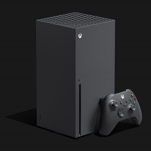

Основная информация

Xbox Series X и Xbox Series S — игровые приставки девятого поколения от американской транснациональной корпорации Microsoft.
Series X и Series S являются новыми консолями в семействе игровых устройств Xbox и преемницами Xbox One. Выпуск обеих приставок состоялся 10 ноября 2020 года.
Microsoft раскрыла первые подробности о своей «консоли следующего поколения» 10 июня 2019 года на международной выставке игровой индустрии E3 2019.
Официальный анонс Xbox Series X состоялся 12 декабря 2019 года на мероприятии The Game Awards 2019.
Главным конкурентом Xbox Series X/S среди игровых платформ следующего поколения стала приставка из серии PlayStation от Sony — PlayStation 5.
Главными конкурентами бренду Xbox в целом Фил Спенсер, глава игрового подразделения Microsoft, называет Google и Amazon с их Stadia и Luna.
Технические характеристики
- Центральный процессор - модифицированный AMD Ryzen 3-го поколения на базе 7-нм+ микроархитектуры Zen 2 (8-ядер/16-потоков) @ 3,8/3,6 ГГц
- Постоянная память - модифицированный твердотельный накопитель (SSD) с интерфейсом NVMe
- Оперативная память - 16/10 ГБ (GDDR6)
- Дисплей - 4K @ 120 Гц; поддержка разрешения до 8K
- Графический процессор - модифицированный AMD Radeon Navi на базе 7-нм+ микроархитектуры RDNA 2 с поддержкой трассировки лучей @ 12,2/4 TFLOPS
Контроллер
В отличие от самой приставки, контроллер Xbox Series X в плане дизайна практически ничем не отличается от геймпада Xbox One. Единственные отличия — изменённая крестовина, отсутствие узора на верхней части контроллера, рифленые рукояти и триггеры (LT, RT и частично LB, RB) и наличие кнопки Share на лицевой стороне, которая работает примерно так же, как и её аналог на DualShock 4 — позволяя упростить захват и публикацию скриншотов и создание игровых клипов.
Новая консоль будет поддерживать Xbox Elite Controller Series (2-й серии).